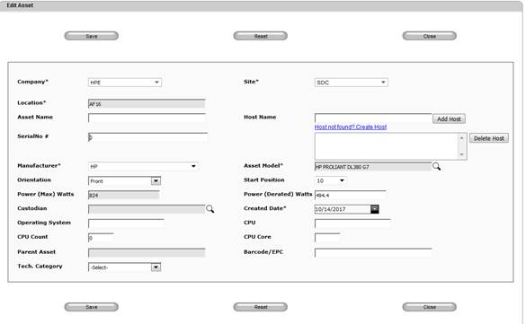
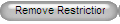
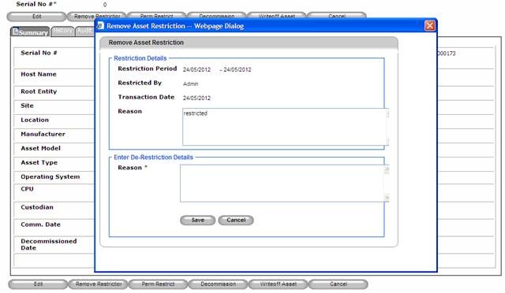

Bar Asset/Restrict Asset
Bar Asset /Restrict Asset will be used to restrict an asset movement for a certain period of time specified by the user.
1. From Search Asset >> View Asset (by clicking on individual asset’s serial no)
2.
Click Restrict Asset button to restrict asset for a period or click
Cancel  button
to disregard operation.
button
to disregard operation.

Figure 127: Search Asset Screen – Restrict Asset
3. Specify restriction period and the reason for the restriction.
4.
Click Save  button
to restrict the asset or click Cancel
button
to restrict the asset or click Cancel  button
to disregard
operation.
button
to disregard
operation.
5.
Asset restriction will be removed
automatically once restriction period is over or can be removed
manually by clicking on the Remove Restriction

6. Specify De-Restriction details.

Figure 128: Search Asset -- Remove restriction
7.
Click Save  button
to the remove the restriction of the asset or click
Cancel button
to disregard
operation.
button
to the remove the restriction of the asset or click
Cancel button
to disregard
operation.